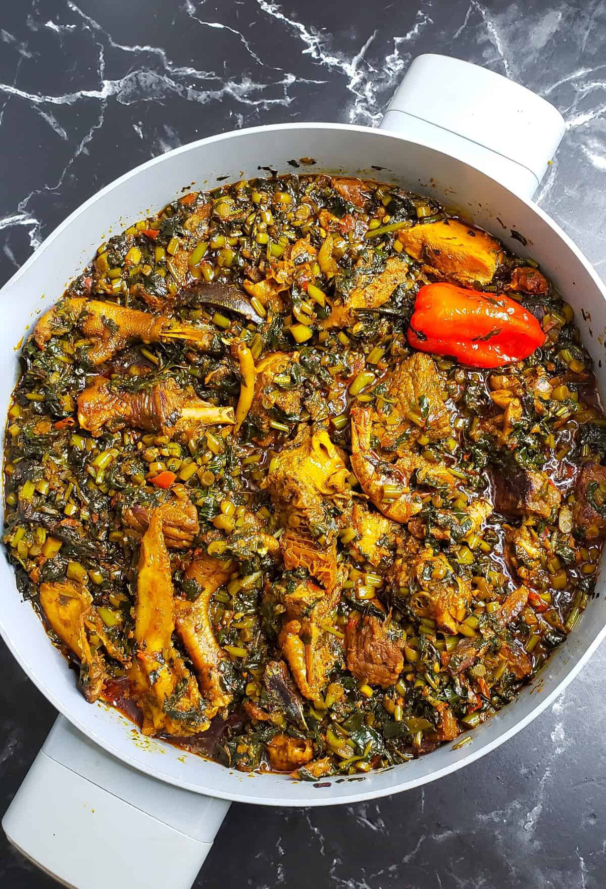

Potato Leaves

Description
Potato leaves, which is my personal favorite meal is among the most nutritious meals in the african continent.
In rural communities in Sierra Leone, it is believed that steamed potato leaves is a great and quick source of iron. Like cassava leaves, potato leaves is best served with rice.
Ingredients
- Potato Leaves
- Oil
- Fish
- Meat (Optional)
- Ogiri (fermented sesame seeds) (Optional)
- Maggie
- Salt
- Onions (Optional)
- Pepper
Steps
- Chop potato leaves into desired size
- Add oil, water and salt to blended pepper, onions and ogiri and leave to cook for 5-7mins
- Add Fish/pre-cooked meat and maggie to taste
- Add pre-chopped potato leaves
- Leave to cook for 2mins
- Serve with rice
Home